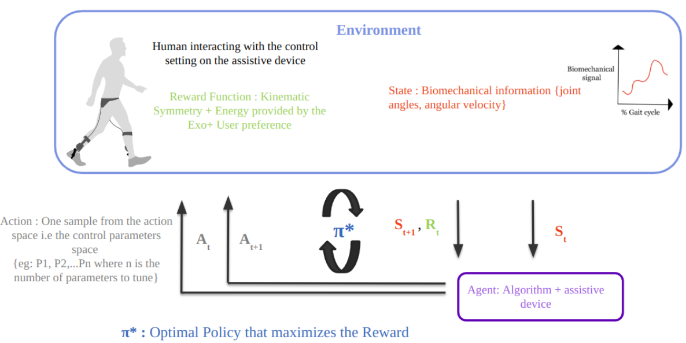
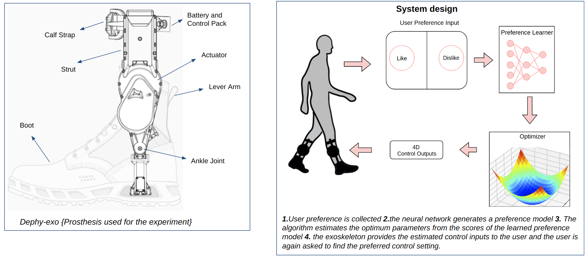
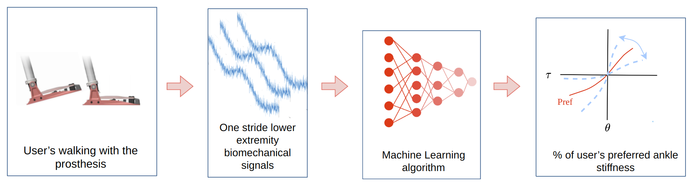
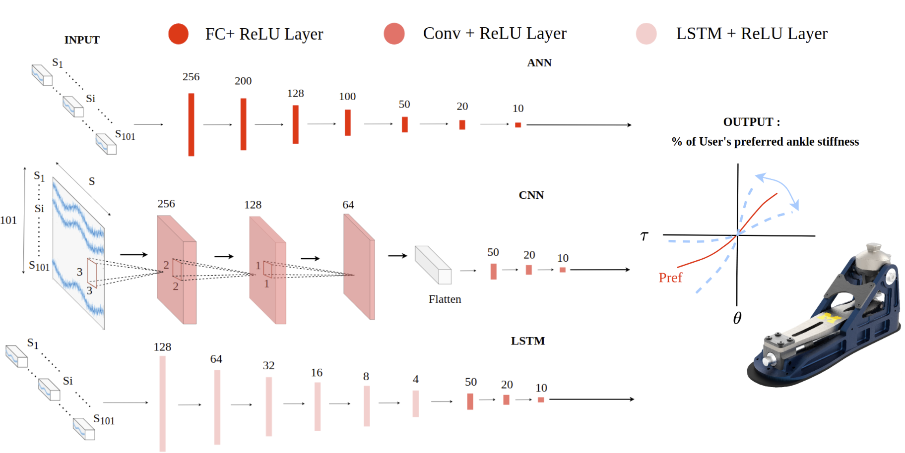

I am currently a PhD student at North Carolina State University. I completed my Master's in Robotics from University of Michigan Ann Arbor, Robotics Department. At University of Michigan I worked with Research Scientist Lauro Ojeda and at the Neurobionics Lab I worked with Dr. Elliott Rouse. After my Masters I worked as a Research Assistant, advised by Dr. Elliott Rouse on "Preference-in-th-Loop Optimization" which was a joint project between the Neurobioonics Lab and Google X.
I'm interested in reinforcement learning, machine learning, computer vision, optimization, and rehabilitation robotics in general. Much of my research is about undertanding human-machine interaction and combining the undertanding of human biomechanics and robotics to build and control assistive devices such as robotic exoskeletons and prosthesis.
The goal of my research is to advance robotic assistive devices for human locomotion and rehabilitation by developing control algorithms that can facilitate the deployment of these devices in practical, real-world scenarios beyond the confines of the laboratory. Also, I am interested in understanding and studying human biomechanics. I am driven by the potential to make a positive impact on people's lives, and to contribute meaningfully to the field of rehabilitation robotics and enhancing the well-being of society.
In my free time I like to play soccer, chess and watching anime.
I am a Roboticist who believes that, in the realm of knowledge, where dreams take flight, learning is the magic which forever ignites.
[May 2023] -- I will be joining Neurobionics Lab as a Research Intern, advised by Dr. Elliott Rouse.
[August 2022] -- I have started my PhD at North Carolina State University.
[June 2022] -- I attended and presented our work on "Preference-in-th-Loop optimization" at Dynamic Walking 2022.
[May 2022] - I attended and presented by research work at International Conference on Robotics and Automation (ICRA) 2022.
[January 2022] -- My research paper "A Data Driven Approach for Predicting Preferred Ankle Stiffness of a Quasi-Passive Prosthesis" got published in IEEE Robotics and Automation Letters.
[April 2021] -- I have started working as a Research Engineer at Neurobionics Lab, on the research project "Preference-In-th-Loop Optimization".
[May 2021] -- I Graduated with at Masters of Science in Robotics from University of Michigan!!
[February 2021] -- I received the "Engineering Innovation" Award, at University of Michigan's 2021 Engineering Research Symposium.
[December 2020] -- I presented my poster and Late breaking abstract (Virtually) on my research work "A data driven approach for predicting preferred ankle stiffness" at the 2020 IEEE BioRob conference.
[August 2019] -- I am starting my Master of Science in Robotics at University of Michigan, Robotics Institute.
Research

Reinforcement Learning Based Generalized Control Tuning Approach Agnostic of Joint, Activity and Robotic Assistive Device Varun S Shetty, Ung Hee Lee, Sehoon Ha, Elliott Rouse
Research Work in Progress
The goal of this study is to show the possibility of using offline RL with online fine-tuning for
control of robotic assistive devices and to take the first steps towards creating a truly generalizable
control tuning algorithm which are agnostic of joints, robotic assistive devices and activities.

User Preference Optimization for Control of Ankle Exoskeletons using Sample Efficient Active Learning
Ung Hee Lee, Varun S. Shetty, Patrick W. Franks, Jie Tan, Georgios
Evangelopoulos, Sehoon Ha, Elliott J. Rouse
Science Robotics {Under Review}, 2023
presentation video
The traditional methods for control parameter tuning of exoskeletons {based on Metabolic cost, Expert-based tuning} are time consuming and subject to optimizing a single objective function.
The goal of this work is to find user's preferred control setting by running a novel sample efficient real- time optimization based on user's real-time feedback {using our GUI interface} for an ankle exoskeleton.

Predicting User Preference With AI To Control A New Generation Of Robotic Assistive Technologies
Elliott J. Rouse, Ung Hee Lee, Varun S Shetty US Patent, 2022
patent link
The objective of this work is to use machine learning methods to predict users preference for robotic assistive devices, and to therby facilitate control tuning of these devices.

A Data Driven Approach for Predicting Preferred Ankle Stiffness of a Quasi-Passive Prosthesis Varun S Shetty, Ung Hee Lee, Kimberly A Ingraham, Elliott J. Rouse
IEEE Robotics and Automation Letters, 2022
presentation video
/
publication link
In this work, we seek to use machine learning algorithms to estimate user-preferred ankle stiffness using biomechanical data
collected from seven subjects during walking at stiffness settings
around their preferred stiffness; our hope is an automated method
may reduce the time and experimental burden of determining
user preferences. This study provides a foundation for an auto-
mated approach for predicting user-preferred prosthesis mechan-
ics that would ease the burden of tuning these systems in a clinical
setting.
In this project I implemented software for the 5 DoF kinematic arm robot, conducted experiments, and participated in a competition conducted among the students taking the course ROB 550. The key points of the implementation consisted of PID control, camera calibration, block detection, forward and inverse kinematics and motion planner.
The objective of the project was to develope a mini robot that could independently navigate and explore an unknown environment. The key points of this project consists of tuning the robot, implementing motion controller algorithm, implementing Simultaneous Localization and Mapping (SLAM) method and using the
The objective of this project was to implemented an algorithm for effectively detect lane lines and vehicle position estimation on
the roads which can be used for self-driving cars for following a lane.
To complete this project I implemented advanced computer vision techniques such as camera calibration, distortion correction, Sobel algorithm, perspective transform, region masking and polynomial fitting techniques for detecting lane lines and vehicle position estimation in a realistic environment.
{kind=link}